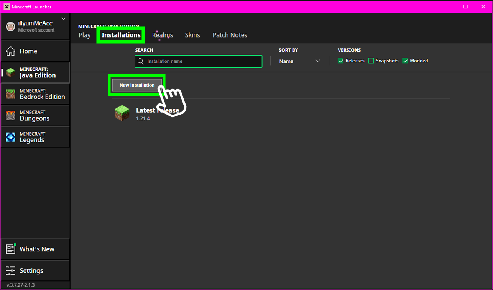

Here I'll show you how to install NeoForge and the mods required to join and play on the server.
First, you'll need to download and launch the Vanilla version 1.21.1. Open your Minecraft Launcher, and select 'Installations'.
In the 'Version' box, type 1.21.1 and SELECT the Release (NOT the snapshot!).
Next, click the 'More Options' dropdown, and change the first number in the JVM arguments from 2 to 6 to allocate more memory for the game.
In the bottom right, hit the green 'Install' button, and launch the game once. Once it launches, close Minecraft and the Minecraft Launcher.
You can download the NeoForge installer from the official website. For reference, we'll be using version 21.1.115.
Locate the installer in your Downloads folder, and double-click it to launch. If the launcher doesn’t open, refer to How to Launch a JAR from Command Line.
Ensure 'Install Client' is selected, then click 'Proceed'.
Download the mods folder here. Once downloaded, locate the ZIP file in your Downloads folder.
Right-click the ZIP file and select "Extract All" to extract the contents. Alternatively, you can double-click the ZIP file to open it.
Open your Minecraft mods folder. To do that, open your Minecraft Launcher > Installations, then click the Folder Icon next to NeoForge
Once the contents are visible, press Ctrl + A to select everything, then drag and drop the selected files into the mods folder you created earlier.
Ensure that all files are placed directly in the mods folder and not in any subfolders.
Return to the Minecraft Launcher, select the NeoForge 1.21.1-21.1.115 installation, and hit 'Play'. The game should launch with the mods loaded.
The IP Address for the server is realm.itzilly.com
If you encounter any issues, feel free to reach out via my discord: itzilly